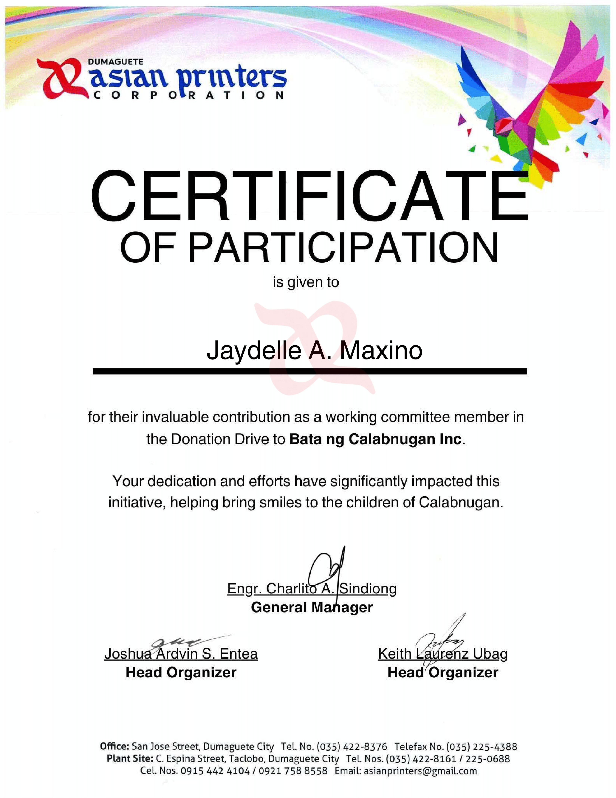

Role: Working Committee
The Donation Drive for Bata ng Calabnugan was held on December 3, 2024 from 3:00 PM onwards, at Calabnugan, Sibulan. The Bata ng Calabnugan, Inc NGO was founded in 2005, the aim of the organization being to provide a safe environment for at-risk and orphaned girls in Sibulan and surrounding areas in the region. The organization works in collaboration with Isla ng Bata, a non-profit organization which was established in 2004 in Rome to raise funds for the home’s operations. At the drive, we visited the orphanage to give the donations we had collected (having donated myself as well), after which we were given a tour of the orphanage and its facilities.
When I attended the event, I was touched by the care the workers of the orphanage showed towards their cause, and how hard they worked to sustain it. I was joined by my peers, and I found myself inspired by the level of dedication and attention that goes into the care of these children. I was immensely happy to be of help to the cause, knowing that my donation was going into the betterment and care of the girls in the orphanage.
This event made me wish to involve myself in more similar events and activities, as I’ve realized that doing so is a truly inspiring and fulfilling experience. Just the act of staying aware and spreading awareness itself can mean so much and make a big difference for these types of organizations. Out of everything that happened, I truly found myself impacted by the care of everyone involved, from my peers to the workers of the organization itself.
Because of this activity, I am more aware of the amount of dedication it takes to support and become involved with the community, and how fulfilling it is to do so.

×